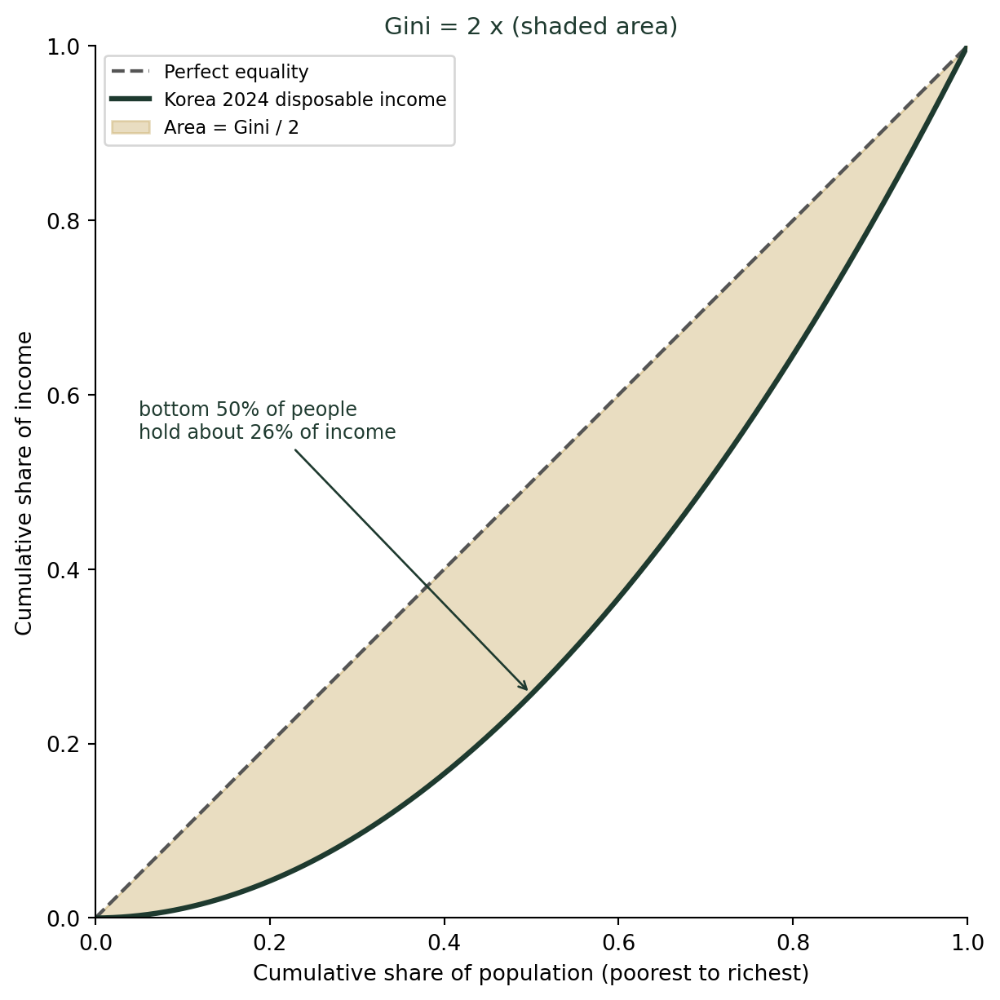
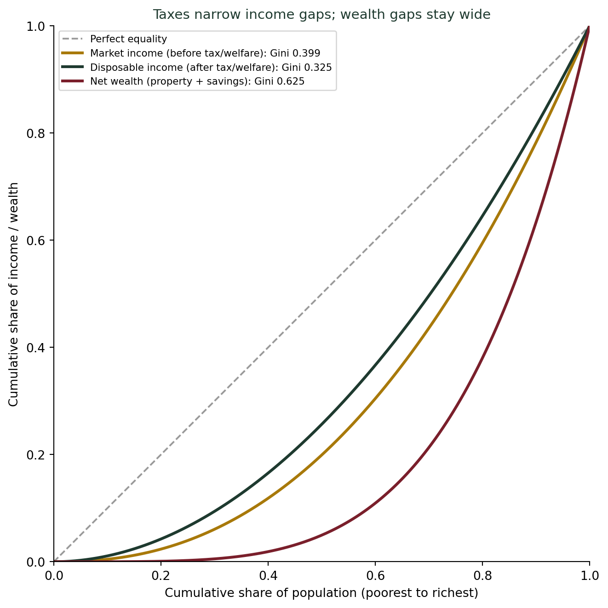

(숫자로 사람을 줄 세우는 법) 숫자 하나로 사회를 요약하기 — 지니계수로 읽는 불평등
통계기초
기술통계
2025년 통계청 가계금융복지조사에 따르면 2024년 한국의 시장소득 지니계수는 0.399, 세금과 복지를 반영한 처분가능소득 지니계수는 0.325다. 그런데 순자산(자산) 지니계수는 0.625로 역대 최고치다. 0과 1 사이의 숫자 하나가 어떻게 한 사회의 불평등 전체를 요약하는지, 로렌츠 곡선으로 직접 그려본다.
한 사회의 불평등을 숫자 하나로 나타낸다면
2025년에 발표된 통계청 가계금융복지조사 결과를 보면, 2024년 한국의 시장소득 지니계수는 0.399, 세금을 걷고 복지 급여를 지급한 뒤의 처분가능소득 지니계수는 0.325다. 그런데 같은 조사에서 집이나 예금 같은 재산까지 포함한 순자산 지니계수는 0.625로, 2012년 통계 작성을 시작한 이래 역대 최고치를 기록했다. 세 숫자 모두 0과 1 사이에 있고, 0에 가까울수록 평등, 1에 가까울수록 불평등을 뜻한다. 그런데 도대체 이 한 개의 숫자가 어떻게 수천만 명의 소득과 자산 분포 전체를 대신할 수 있을까?
로렌츠 곡선: 불평등을 그림으로 그리면
지니계수의 뿌리는 로렌츠 곡선(Lorenz curve)이다. 그리는 방법은 이렇다. 사람들을 소득이 낮은 순서부터 줄 세운 뒤, 가로축에 “하위 몇 %의 인구”를, 세로축에 “그들이 가져간 소득이 전체의 몇 %인가”를 누적으로 표시한다. 모두가 정확히 똑같이 번다면, 하위 10%는 전체 소득의 10%를, 하위 50%는 50%를 가져가므로 이 곡선은 대각선이 된다. 반대로 불평등이 심할수록, 하위 몇 %는 소득의 아주 작은 몫만 가져가므로 곡선이 대각선 아래로 축 처진다.
대각선과 실제 곡선 사이에 생기는 빈 공간(그림의 노란 영역)의 넓이를 2배 하면, 그게 바로 지니계수다. 완전히 평등한 사회는 곡선이 대각선과 겹쳐 빈 공간이 없으므로 지니계수 0이다. 한 사람이 모든 소득을 가져가는 극단적으로 불평등한 사회는 빈 공간이 최대가 되어 지니계수가 1에 가까워진다. 즉 지니계수는 “실제 분배가 완전 평등에서 얼마나 멀어져 있는가”를 하나의 숫자로 압축한 것이다.
세금과 복지는 불평등을 얼마나 줄이는가
이제 실제 세 가지 지니계수를 로렌츠 곡선으로 나란히 그려보자.

세금·복지 전(시장소득)과 후(처분가능소득)를 비교하면 곡선이 눈에 띄게 대각선 쪽으로 당겨진다 — 지니계수가 0.399에서 0.325로, 0.074 줄었다는 뜻이다. 정부의 재분배 정책이 실제로 작동하고 있다는 증거다. 그런데 순자산 곡선은 완전히 다른 이야기를 한다. 0.625라는 지니계수는 소득 지니계수보다 훨씬 크고, 곡선도 훨씬 아래로 축 처져 있다. 소득은 세금과 복지로 어느 정도 완화되지만, 이미 쌓인 집·예금 같은 자산의 격차는 그보다 훨씬 크게 남아 있다는 뜻이다.
지니계수를 읽는 법
- 0.3 안팎이면 비교적 평등, 0.4를 넘으면 불평등이 심한 편, 0.5를 넘으면 매우 심각한 수준이라는 게 국제적으로 통용되는 대략적인 기준이다.
- “시장소득”과 “처분가능소득” 중 어느 쪽 지니계수인지 반드시 확인하라. 정부 정책의 효과를 보려면 둘의 차이를 봐야 한다.
- 소득 지니계수와 자산(순자산) 지니계수는 전혀 다른 이야기를 할 수 있다. 오늘 살펴봤듯, 소득 불평등이 완화되는 중이라도 자산 불평등은 계속 커질 수 있다.
더 깊이: 같은 이름, 다른 곳에 쓰이는 지니
흥미롭게도 “지니”라는 이름은 머신러닝에서도 등장한다. 강의노트 〈AI·감성분석 분류모형 — 분할 기반(Tree) 분류〉는 분류나무가 가지를 나눌 때 쓰는 지니 불순도(Gini impurity) \(G(t) = 1 - \sum_k p_k(t)^2\)를 소개한다. 공식은 오늘 다룬 로렌츠 곡선 기반 지니계수와 똑같지 않지만, 지향점은 닮았다 — 둘 다 “한 집단이 얼마나 뒤섞여 있는가(순도가 낮은가)”를 하나의 숫자로 요약한다. 경제학자 코라도 지니(Corrado Gini)가 1912년 소득 불평등을 재기 위해 고안한 이 발상이, 100년 뒤 전혀 다른 분야인 의사결정나무 알고리즘에서도 “불순도”를 재는 도구로 재등장한 셈이다.
결론: 한 숫자 뒤에는 항상 곡선 전체가 있다
나는 학생들에게 “지니계수 0.325”라는 뉴스 헤드라인을 보여줄 때마다 이렇게 말한다. “이 숫자 하나가 로렌츠 곡선 전체를 대신하고 있다는 걸 기억하세요.” 이번 챕터에서 우리는 “숫자로 사람을 줄 세우는 법”을 다룰 예정이다. 지니계수는 그 첫 번째 사례다 — 수천만 명의 소득 분포라는 복잡한 정보를 0과 1 사이의 숫자 하나로 압축하면서도, 그 압축 뒤에 로렌츠 곡선이라는 완전한 그림이 숨어 있다는 걸 아는 것과 모르는 것은 전혀 다르다.